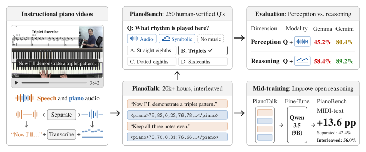

PianoBench: Evaluating Musical Perception and Reasoning in Language Models
1 Queen Mary University of London 2 Carnegie Mellon University 3 Cornell University
Overview

PianoBench contains 250 human-verified multiple-choice questions about short piano passages, presented as audio or a text encoding of their MIDI transcription (MIDI-text). Open-weight audio-language models such as Qwen 3 Omni, Gemma 4, Audio Flamingo, and Music Flamingo struggle with these questions, achieving at most 52.8% accuracy on audio. When given MIDI-text, language models benefit substantially from chain-of-thought reasoning: Qwen 3.5 9B improves from 50% to 70%, and frontier models reach 93.2%. PianoTalk provides training data for learning these connections between musical notes and the concepts used to describe them. It contains over 20,000 hours of interleaved commentary and piano transcripts from instructional videos. Mid-training Qwen 3.5 9B on this data improves PianoBench accuracy on MIDI-text without chain-of-thought reasoning to 56.0%, compared with 42.4% when training on the same commentary and music separately.
PianoTalk Dataset Explorer
Use the interactive viewer to explore example videos from PianoTalk. Click the timeline to jump to a moment in the video and follow the aligned captions and MIDI piano transcription. Both may contain errors. The captions shown here are from YouTube. We also provide speech transcriptions generated with NVIDIA’s Parakeet model on Hugging Face.
Loading YouTube video…
Open source video on YouTube ↗Speech
0 contiguous regions
No speech at this point.
Piano transcription
0 contiguous regions · 0 notes
PianoBench Explorer
Use the interactive viewer to explore example questions from PianoBench. The audio contains a Pianoteq rendering of the piano transcription used for each question.
Citation
@article{bradshaw2026pianobenchevaluatingmusicalperception,
title = {PianoBench: Evaluating Musical Perception and Reasoning in Language Models},
author = {Louis Bradshaw and Irmak Bukey and Daniel Chenyu Lin and John Thickstun and Chris Donahue},
year = {2026},
eprint = {2611.03839},
archivePrefix = {arXiv},
primaryClass = {cs.SD},
url = {https://arxiv.org/abs/2611.03839},
}